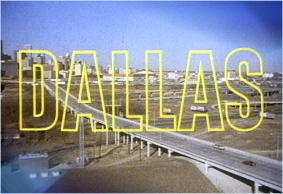
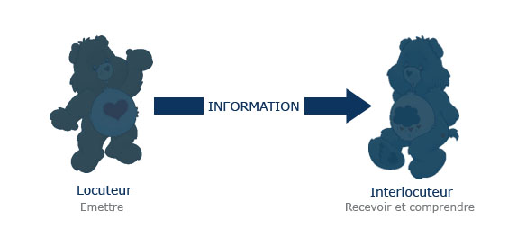
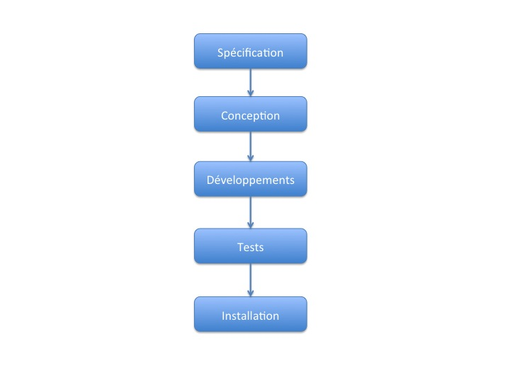
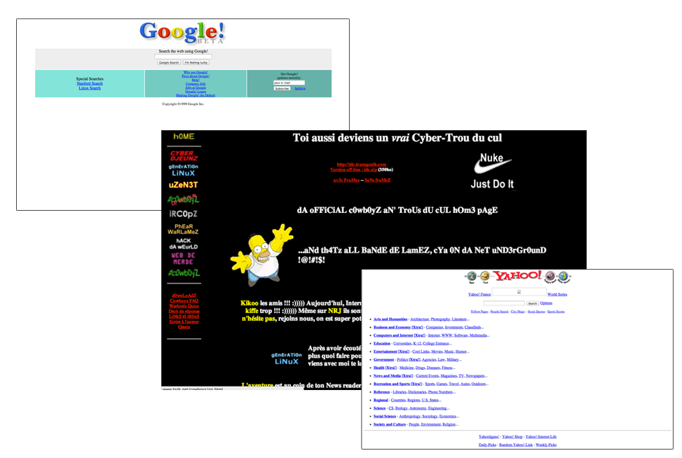
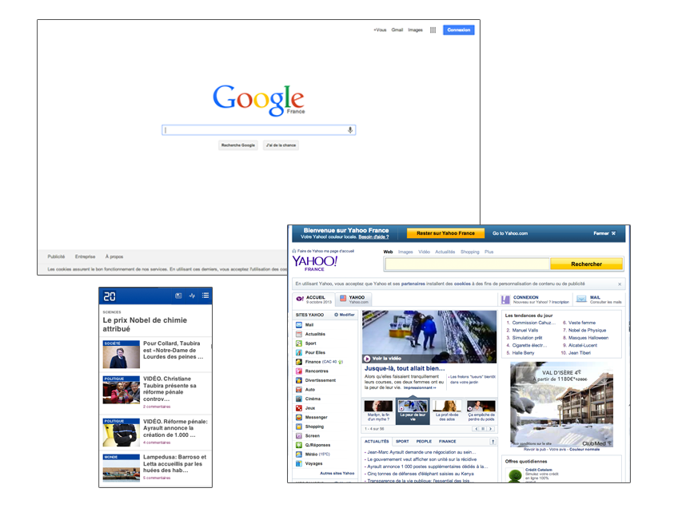

Les 7 préceptes d'un projet Web raté !
Quelques idées pour devenir moins bon
Proposé par Julien OGER - @JulienOG
Auto-promo


- Chef de projet
- Responsable Méthodologie
- 10 ans dans le Web
Pourquoi ?
Une idée vraiment pas sortie d'un brainstorm alcoolisé!
Le Web : ton univers impitoya-a-ble !

Tous gourou de la gestion de projet !
N'attendez donc pas de ce 1/4 d'heure...
- ...une initiation à la gestion de projet,
- les secrets d'une méthodologie absolue,
- de quelquonques pistes de réussite.
Objectif : L' échec !
Conseil #1
Brouillez vos réseaux de communication
La communication par définition...
Faire passer quelque chose à quelqu'un pour qu'il en prenne connaissanceLarousse ©

... n'est pas ce que nous en faisons !

Causes principales
- Limite du langage
- Utilisation qui en est faite
Pas besoin de se forcer pour échouer
- Avec ses équipes : partitionner / ne pas impliquer
- Avec le client : opacité / adaptation inutile
- Favoriser l'anarchie, le bruit et les intermédiaires
Conseil #2
Instaurez le Chaos dans vos outils !
Outils ou instruments de torture, à vous de choisir !

- Multiplier les outils
- Ni maitrise, ni méthode
- Négliger l'interopérabilité
- Objectif à remplir : perdre les utilisateurs et multiplier la charge
Conseil #3
Oubliez l'agilité !
PDCA, Lean... c'est de la masturbation cérébrale !
Revenons aux méthodes classiques

Favoriser l'effet tunnel
Soyons plus subtils
- Tête baissée dans le paradoxe de l'agilité
- Ne tenez compte ni de votre activité...
- ... ni de la sensibilité de vos équipes...
- ... ni de celle du client...
- ... ni du contexte projet !
Conseil #4
L'aspect ''technique'' et la veille techno
aucun intérêt !!
Il y a bien longtemps...

15 ans plus tard

On est quand même passé par ça...

Conseil #5
Le Web c'est un seul métier ""et pis c'est tout"" !
Bah, tu fais du Web quoi !
Conseil #6
L'organisation, on s'en occupe...
... quand c'est déja trop tard !
- Procrastiner et prioriser sur les tâches simples
- Garder bonne conscience sans tenir compte de la règle des 80/20
- La loi de Murphy fera le reste...
Conseil #7
L'expérience : ce concept très largement négligeable
Utiliser l'expérience en négligeant le contexte...
...peut avoir un effet...innatendu !